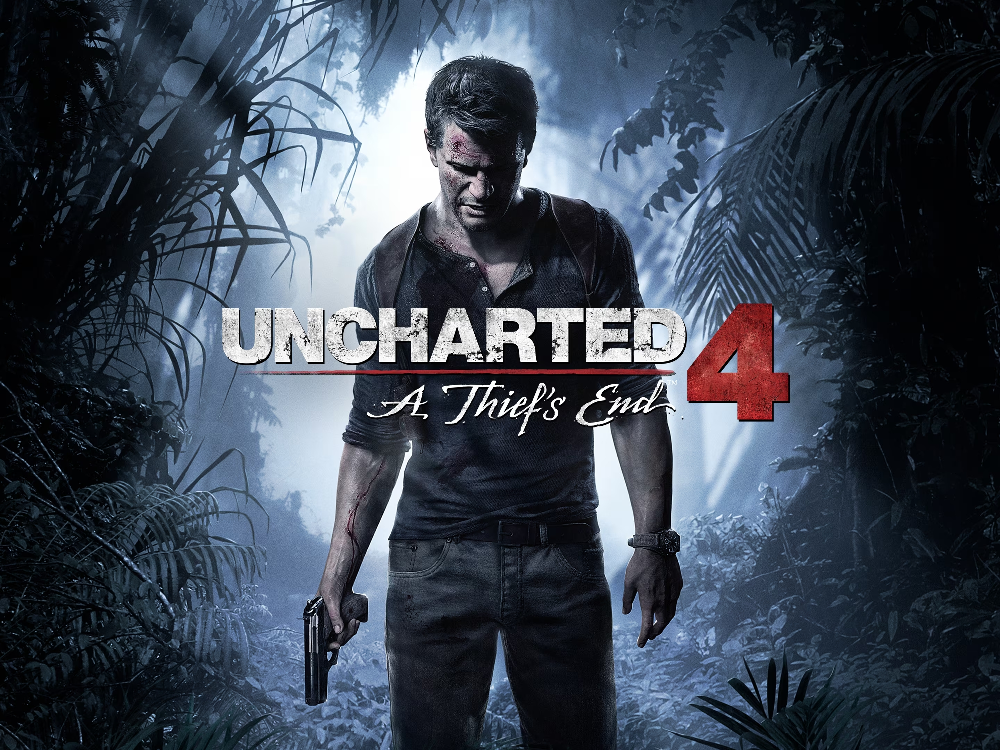
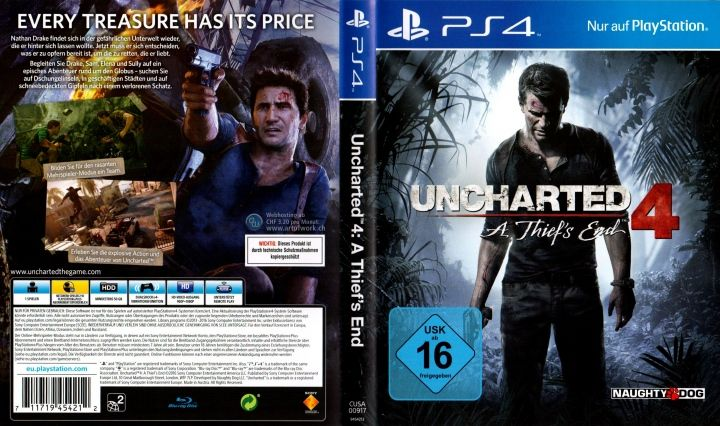

Bienvenido a la aventura
Uncharted 4: El Desenlace del Ladrón es un videojuego de acción y aventuras desarrollado por Naughty Dog y distribuido por Sony Computer Entertainment, exclusivo para consolas PlayStation 4.
Acompañá a Nathan Drake en su última gran búsqueda de tesoros.

Caja del juego
